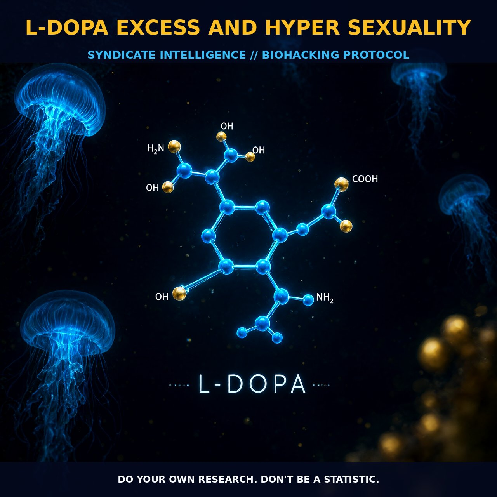

Hyper Sexuality and L-DOPA: The Dopamine Dysregulation Syndrome

1. The Mechanism
L-DOPA, a precursor to dopamine, readily crosses the blood-brain barrier and is commonly used as a nootropic supplement. When converted to dopamine in the brain, it can enhance libido and testosterone levels. However, excessive dosing can disrupt the delicate balance of dopamine signaling, leading to dopamine dysregulation syndrome (DDS). This condition, often observed in Parkinson's disease patients on long-term dopamine replacement therapy, can manifest as hypersexuality, alongside other compulsive behaviors such as pathological gambling and compulsive eating.
The mechanism behind this hypersexuality involves the overstimulation of dopamine receptors, particularly the D2 and D3 receptors, which are crucial for regulating sexual desire and performance. Overactivation of these receptors can lead to desensitization and dysregulated sexual behavior. Additionally, L-DOPA can influence the release of other neurotransmitters such as norepinephrine and serotonin, which play roles in modulating sexual behavior and arousal. The interaction between these neurotransmitters and the dysregulated dopamine signaling can exacerbate the hypersexual effects observed in patients with DDS.
Dopamine dysregulation syndrome (DDS) is characterized by an addictive pattern of dopamine replacement therapy use. In patients with Parkinson's disease, DDS can be triggered by prolonged exposure to high doses of L-DOPA, leading to a cascade of behavioral and neurological changes. The overstimulation of dopamine receptors, especially D2 and D3, can lead to hypersexuality and other compulsive behaviors.
The overactivation of dopamine receptors can also affect the cAMP signaling pathway, a critical pathway involved in regulating neuronal activity. Increased cAMP production can lead to downstream effects on protein kinase A (PKA) activation, influencing the phosphorylation of various proteins involved in synaptic plasticity and neurotransmitter release. This results in altered neuronal excitability and synaptic function, contributing to hypersexual behavior observed in DDS patients. Additionally, the dysregulation of the dopamine system can lead to changes in the levels of other neurotransmitters, such as serotonin and norepinephrine, further modulating behavioral responses.
2. Protocol Implementation
When implementing L-DOPA as a nootropic, it is crucial to carefully monitor the dosage to avoid dopamine dysregulation syndrome. Typically, users should start with low-to-moderate amounts and gradually increase the dose as needed. The optimal dosage range for most users is between 100 to 300 milligrams, taken once or twice daily, depending on individual tolerance and response.
It is advisable to take L-DOPA on an empty stomach to enhance absorption, and to space out doses to avoid peak concentrations that might lead to receptor saturation. Timing is also critical. Taking L-DOPA in the morning or early afternoon can help avoid the potential for sleep disturbances, as the effects of L-DOPA can last several hours.
Stacking L-DOPA with other nootropics, such as vitamin B6, can enhance its effectiveness and aid in the conversion of L-DOPA to dopamine. However, caution should be exercised when stacking with other dopamine precursors or agonists, as this can increase the risk of receptor desensitization and DDS.
Prostar Life Hack
Start with low-to-moderate doses of L-DOPA, gradually increasing as needed. Take it on an empty stomach and time your doses for morning or early afternoon to avoid sleep disturbances. Stack with vitamin B6 for enhanced effectiveness.
[ AUTHOR: LEAD TECHNICAL RESEARCHER ]